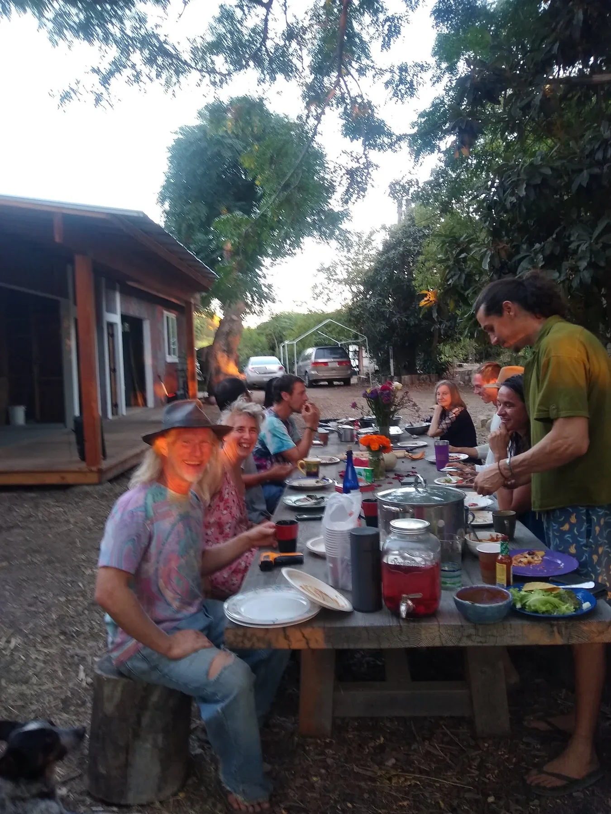
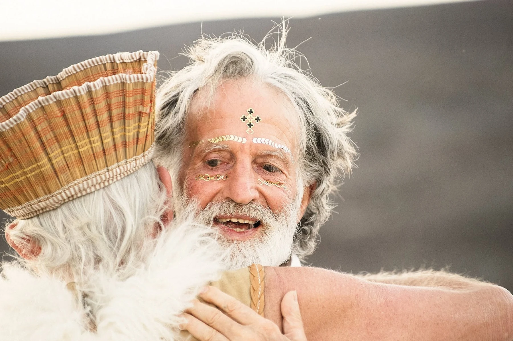
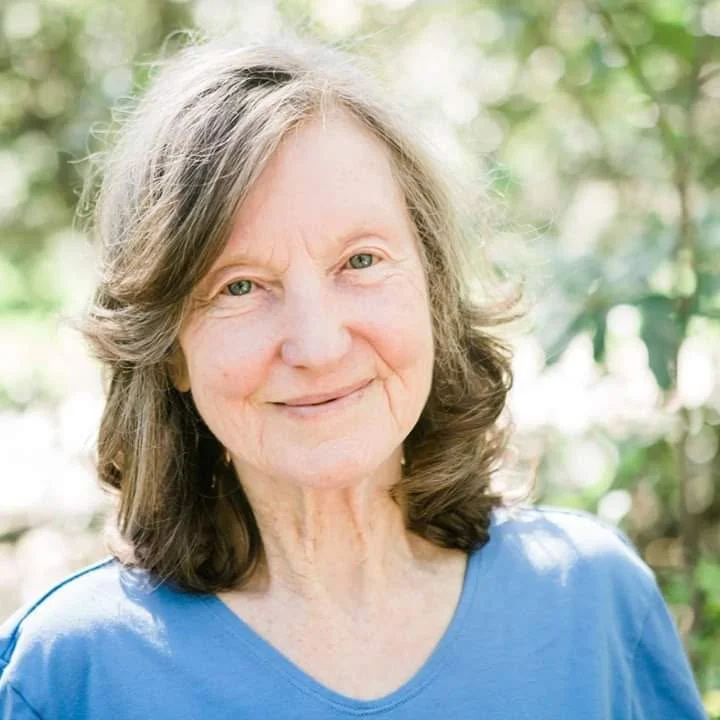
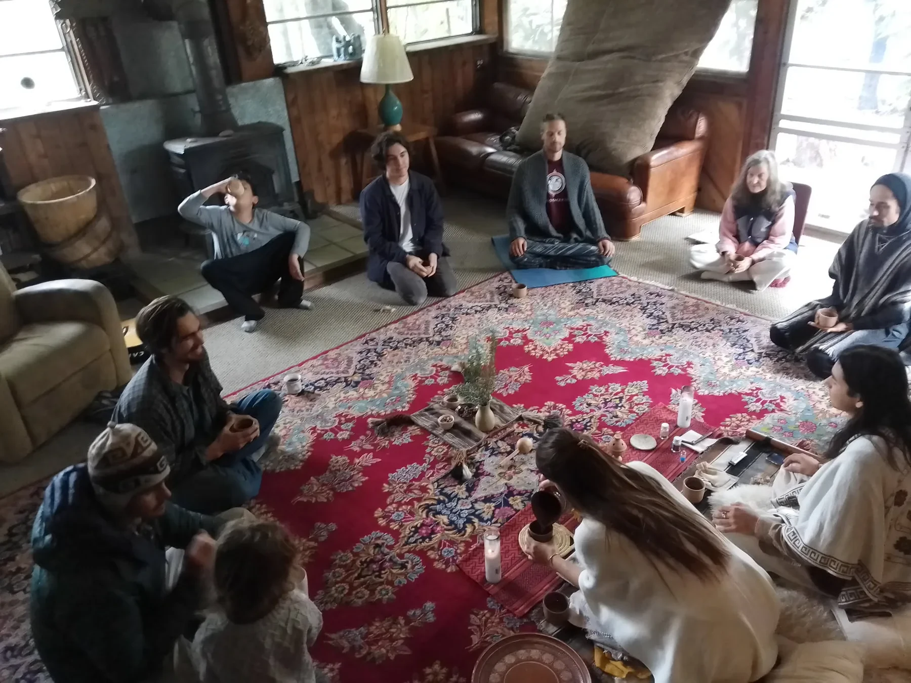
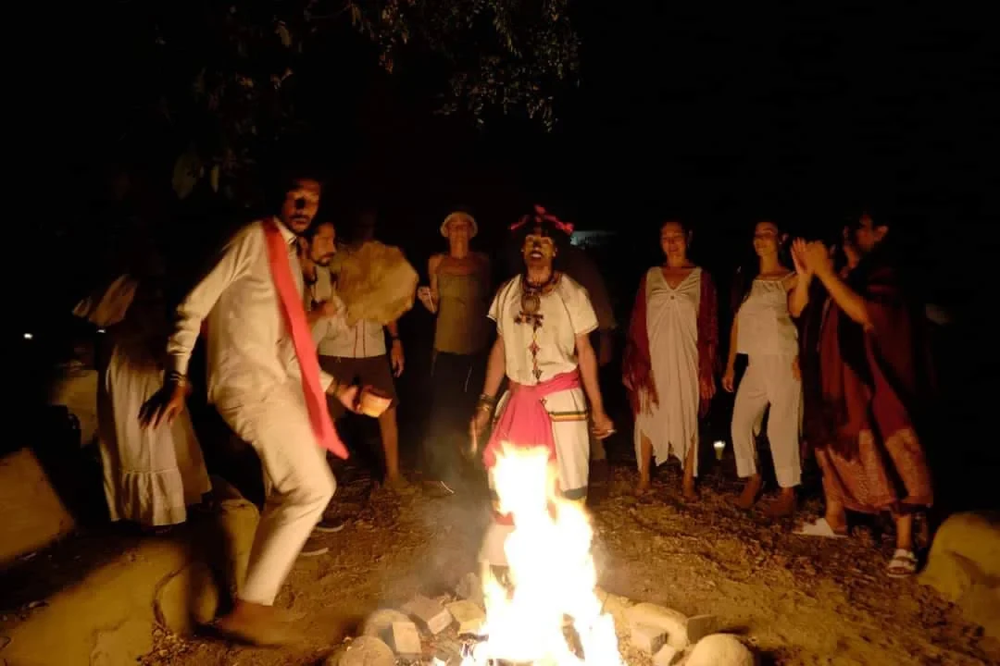
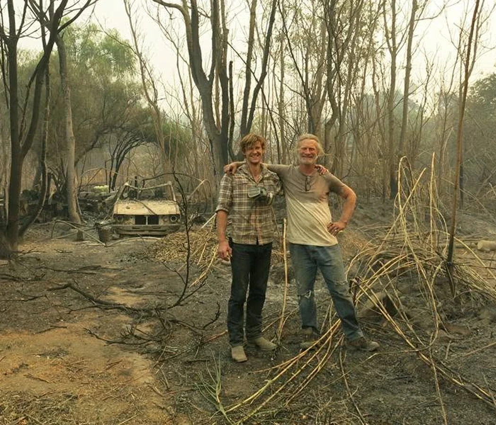
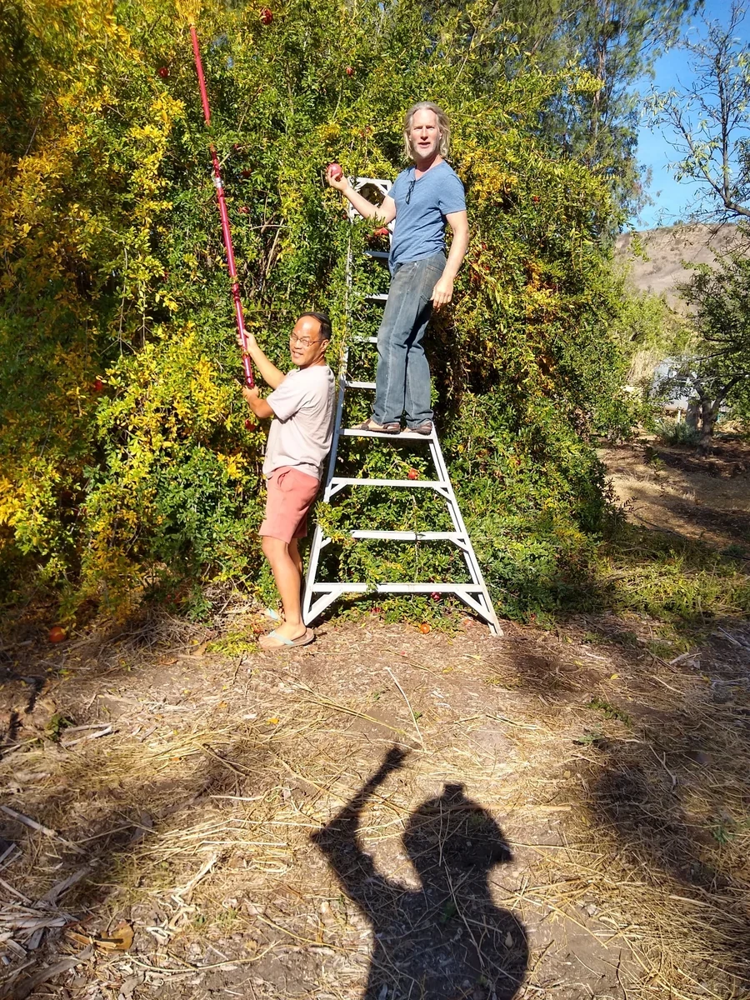
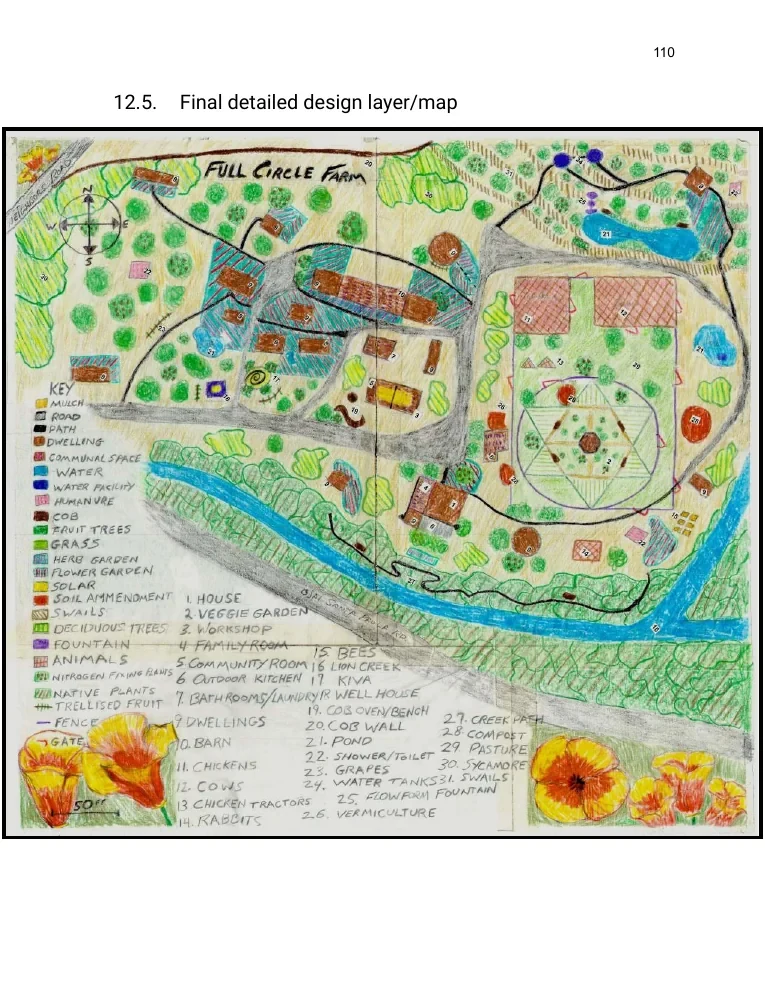

Chapter 01 · Place, people and memory
The Story of
Full Circle Paradise
Four decades of land, community, experiment, and return

A living archive
The Story of Full Circle Paradise
Full Circle Farm in Upper Ojai was never simply a farm. It was a home, a gathering place, a school, a social experiment, and a landscape shaped by many hands over many years.
In this archive, I call it Full Circle Paradise—not because it was perfect, but because it held a rare concentration of beauty, possibility, human effort, and living memory. Its gardens, orchards, buildings, gatherings, conflicts, friendships, and changing ideas all became part of one evolving organism.
The story of Full Circle cannot be reduced to a single founder or a single plan. It belongs to the people who began it, the people who sustained it, the people who passed through, and the land itself.

Founder · vision and permission
Bob Goddard
Bob Goddard founded Full Circle Farm and gave the place its original center of gravity.
His vision helped set decades of activity in motion: gardens, small dwellings, workshops, gatherings, ceremonies, experiments in community, and an openness to people searching for another way to live.
Bob was not a distant founder whose influence existed only in the past. His personality was part of the atmosphere of the place. He brought warmth, imagination, humor, ceremony, and a willingness to allow Full Circle to become something unconventional.
The farm reflected that spirit. It was handmade rather than polished, layered rather than planned all at once. Buildings, gardens, paths, and relationships accumulated over time. Some things worked beautifully. Others remained unfinished, changed direction, or were absorbed into the next chapter.
That incompleteness was part of Full Circle’s character. It was never a finished model placed behind glass. It was alive.



Matriarch · continuity and care
Jaya
If Bob helped begin Full Circle, Jaya helped it endure.
For most of the community’s nearly forty-year history, Deanna Jaya Nakosteen carried much of its practical and social continuity. She became one of the central people holding the place together across changing generations of residents, visitors, projects, and personalities.
Her work was concrete and constant. Jaya ran the community food program. Each day, two residents cooked a generous vegetarian meal for everyone and then cleaned the kitchen. Behind that daily rhythm was a larger system that she coordinated: bulk food and household supplies delivered four times a year, big bags of rice and lentils, coconut oil, toilet paper, and an unusually deep inventory of herbs and spices.
Every Sunday she drove her large yellow car to the Ojai farmers market, often with one person assisting her, and returned with a carload of organic produce. She also stopped at Rainbow Bridge, the local organic market, to fill whatever gaps remained. She maintained this routine for years.
Jaya also ran the community’s biweekly general meetings. Food, meetings, purchasing, schedules and relationship were not separate tasks; together they formed the infrastructure of belonging.
Communities are often remembered through founders and dramatic events, but their survival usually depends upon repeated forms of care: maintaining relationships, preserving memory, helping new people find their place, feeding people well, and continuing when enthusiasm fades.
Any account that names Bob but leaves out Jaya would misunderstand how Full Circle survived as a community. Her long stewardship made her one of the most important people in the history of the place and one of its clearest living links between past and present.
Social Permaculture Reflections, workbook p. 102 · Jaya’s food and meeting systems
A human ecosystem
A Community in Motion
Over the years, Full Circle attracted an extraordinary range of people.
Some arrived for a short visit. Others stayed for a season or became part of the community for years. Gardeners, builders, artists, seekers, travelers, teachers, craftspeople, and people simply needing a place to begin again all entered the life of the farm.
Daily life was created through ordinary acts:
shared meals beneath the trees, garden work, harvests, cooking, repairs, meetings, ceremonies, celebrations, difficult conversations, and the constant practical work of maintaining a place where many people lived together.
The community was never static. Its culture changed as people came and went. Authority, responsibility, and participation had to be negotiated repeatedly.
At different times, Full Circle explored more distributed forms of organization, including ideas drawn from sociocracy and Holacracy. Holacracy especially interested me because it offered a way to separate authority from personality. Instead of depending entirely on fixed titles or informal social power, responsibility could be placed in clearly defined roles that evolved as the organization changed.
These approaches were explored rather than perfected. Some people found them liberating; others found them unfamiliar or overly abstract. Full Circle moved through recurring cycles of centralized leadership, collective process, experimentation, and revision.
That tension was not separate from the permaculture story. It was part of the social ecology of the place.



December 2017 · a dividing line
The Thomas Fire
In December 2017, the Thomas Fire swept through Upper Ojai and became one of the defining events in Full Circle’s history.
During the fire, Shaun Walton and I worked to protect the main house. The experience reduced the life of the farm to its most immediate elements: fire, water, wind, shelter, tools, judgment, and the willingness of people to stand beside one another under extreme conditions.
The Thomas Fire changed the physical landscape, but it also revealed the strengths and vulnerabilities of the place. Buildings, vegetation, access, stored water, defensible space, and construction materials were no longer abstract design subjects. Their consequences were immediate.
The fuller account belongs in the Climate chapter of this archive. Within the larger story, however, the fire stands as a dividing line. Full Circle remained the same land, but it was no longer exactly the same place.
Participation and observation
My Life at Full Circle
I came to Full Circle during a later chapter of its history.
I was not there at the beginning, and I did not experience every era of the community. My understanding came through participation: living with the land, working alongside others, listening to people who had known the place much longer, and gradually recognizing the layers of history embedded in its buildings and landscape.
Full Circle changed the way I understood permaculture.
Permaculture was no longer only a method for arranging water, plants, buildings, and energy. It became a way of seeing relationships: between people and land, history and design, freedom and responsibility, beauty and maintenance.
The farm offered daily evidence that ecological systems and social systems cannot truly be separated. A garden depends upon water, soil, labor, knowledge, cooperation, and continuity. A community depends upon many of the same things.
What made Full Circle important to me was not that it represented a completed utopia. It did not. Its value came from the fact that the experiment was real.

The land becomes a document
The 2022 Design Study
In 2022, while completing the Quail Springs Online Permaculture Design Course, I chose Full Circle as the site for my final design project.
The resulting workbook became a detailed study of the property: its climate, watershed, soils, vegetation, buildings, energy systems, gardens, orchards, community structures, and possible futures.
I created maps, inventories, observations, calculations, sector studies, planting plans, and phased proposals. The work eventually grew into the 112-page document preserved in this website.
The workbook was never intended to impose a new master plan upon the land. Full Circle already possessed decades of accumulated knowledge. My task was to observe carefully, document what existed, understand how the systems related to one another, and imagine how the next layers might be added.
Teachers and friends helped shape that process. Alpha Lo was among the important influences and companions connected with this period of learning and design.
The workbook became both a permaculture proposal and an archive of the place as I knew it in 2022.


Neither utopia nor failure
What Full Circle Taught Me
Full Circle contained generosity and conflict, beauty and disorder, inspired ideas and unfinished projects.
That complexity is essential to the story.
It would be easy to romanticize the place and present it as a perfected ecological community. It would be equally misleading to focus only on its difficulties. Full Circle mattered because both were present.
It demonstrated what can happen when people give land, time, work, imagination, and relationship to a shared experiment. It also showed how difficult it is to maintain that experiment across decades.
The deepest lessons were not always found in the grand plans. They were often found in the repeated acts that allowed life to continue:
repairing something instead of discarding it, sharing food, watering trees, welcoming someone new, holding a meeting, resolving a disagreement, responding to fire, and remembering who had done the work before us.
Memory carried forward
A Continuing Lineage
This website preserves Full Circle as a place, a design study, and a chapter of my own life.
It is not meant to freeze the community into a single version of its history. Full Circle changed constantly, and different people experienced it differently. This archive reflects what I observed, what others shared with me, and what could be recovered through photographs, maps, documents, and memory.
The lessons continue into my work at Boulder Gardens Sanctuary and into the developing vision of Fieldstation.
Boulder Gardens is not an attempt to reproduce Full Circle. The landscape, community, climate, and circumstances are different. But the lineage remains: ecological design joined with practical experimentation, social learning, shared knowledge, and careful documentation.
Full Circle taught me that permaculture is not only the design of land.
It is the patient work of creating relationships capable of carrying water, food, shelter, memory, knowledge, and responsibility across time.